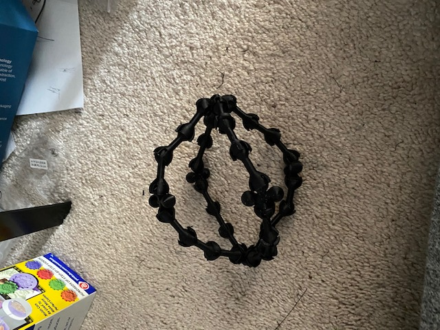
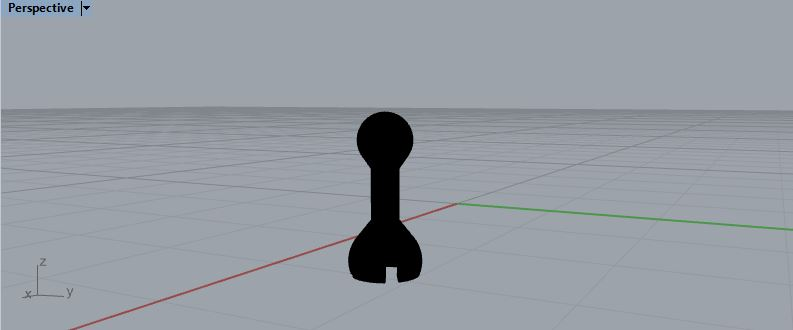
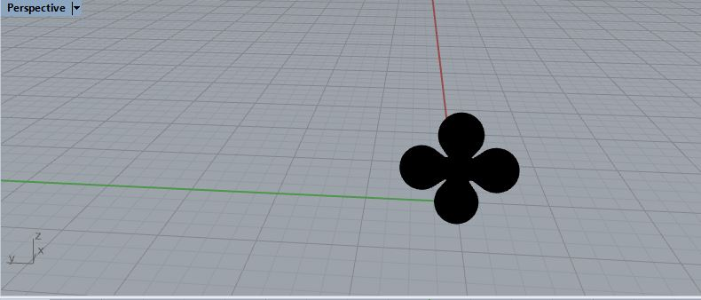
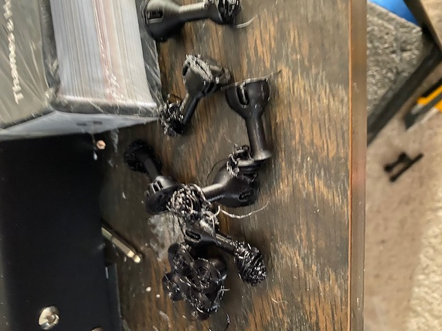
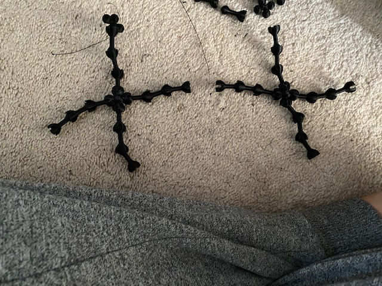
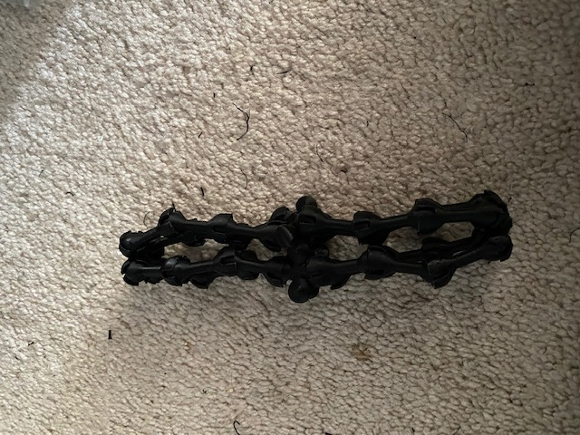
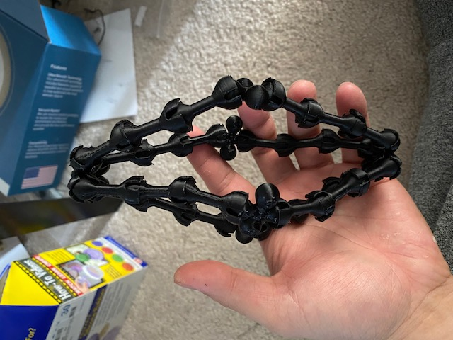

Assignment 7 - Molding and Casting Finished, and Final Project Proposal
Assignment 7 was the Final Project!
The Final Project
As A reminder here is what I proposed in assignment 6
"For my final project, I noticed that I had alot of issues throughout the quarter figuring out the right tolerances for parts that fit or snap together.
In many cases, holes were too small, or the inserts too flimsy
For my final project I will be exploring Snap together ball joints.
Ball joints allow a flexibility of movement, but without the right tolerances, it would be difficult to move, or fall right out
This project will take some inspiration from the hoberman ball, and seek to create some sort of collapsable object from the ball joints.
The Final Process
I began my project by looking for different ball and sockets that fit together.
I utilized models that others had created, and printed them all out (credits listed below)
After printing them all out, I analyzed them on degree of motion and ease of snap fit.
I then utilized the shape to create my own, Splitting the meshes, and joining them together to create my primary building piece.
This piece was a ball on one end and a socket on the other, allowing multiple pieces to join together.
I then created pieces that were all sockets and pieces that were all balls, to join the building blocks together at the top and the bottom.
The most difficult part about this was figuring out the right dimensions to print at.
For some reason when i brought the stl into my slicer, it would scale it up to the largest it could be within the slicer
Thus it took quite a few test prints at different dimensions to make sure it would click together without falling apart all together, or breaking the socket.
Below I put them all together and tested it by creating various shapes
Even now, I notice that each piece is not exactly the same, my printer does not print the pieces perfectly enough, and more calibration may be needed.
Especially with my project, even printing off by less than a mm caused the ball and socket joint to be loose and fall apart, or break the socket portion when trying to join them
This quarter has been extremely fun, and I am excited to continue practicing 3D printing for various uses

Below are all the pics for my final project!
Final Project






